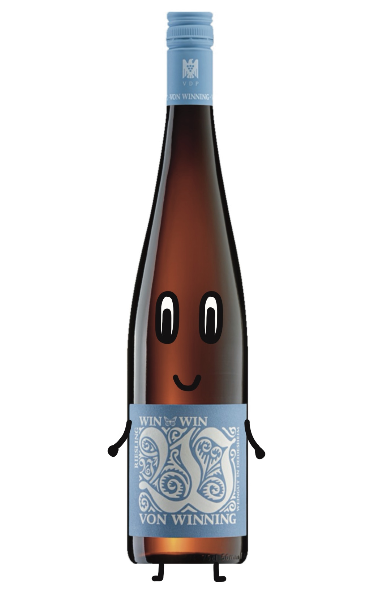
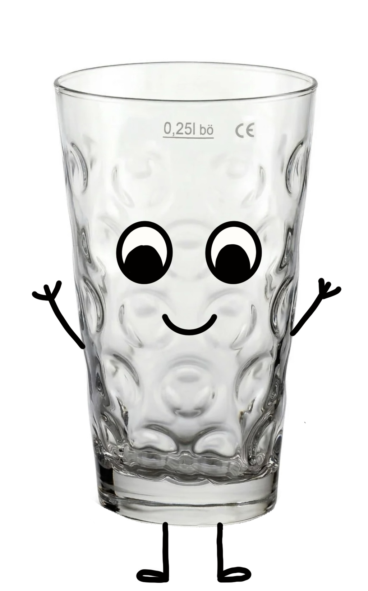
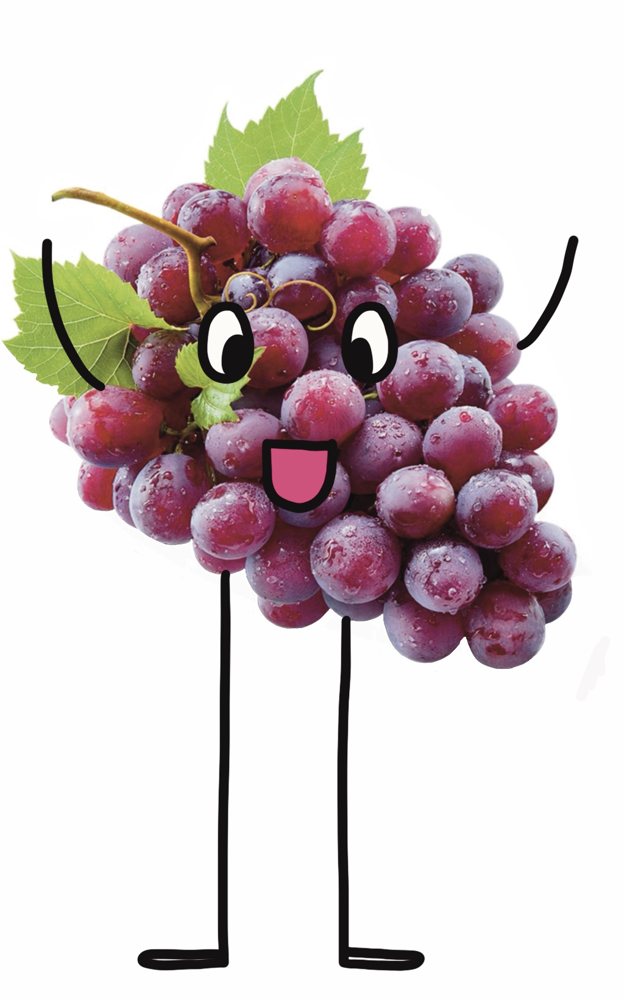

Hinter jedem guten Dom steckt ein noch besseres Team. Bei Dombau Pfalz vereinen
drei ganz unterschiedliche Persönlichkeiten ihre Stärken zu einem eingespielten
Trio: Kreativität, Herzlichkeit und Präzision. Jeder Einzelne bringt sein eigenes
Talent mit ein – und gemeinsam sorgen sie dafür, dass aus kühnen Ideen echte
Wahrzeichen werden.
Ob am Zeichentisch, im Kundengespräch oder mitten auf der Baustelle: Unser Team
lebt Architektur mit Leidenschaft und einer guten Portion pfälzischer Gelassenheit.
Lernen Sie die Köpfe hinter Dombau Pfalz kennen.

Vino hat schon einige Kubikmeter Trollinger und Riesling fließen sehen – und genauso viel Erfahrung steckt in seinen Entwürfen. Als gebürtige Weinflasche aus der Vorderpfalz kennt er sich mit klaren Linien, solider Statik und einem Schuss Eleganz bestens aus. Sein Motto: "Ein guter Dom braucht wie ein guter Wein Zeit, die richtige Lage und ein stabiles Fundament." Mit dem Zeichenstift in der einen und einem Glas Silvaner in der anderen Hand entwirft Vino Gotteshäuser, die genauso viel Charakter haben wie ein Spätlese-Jahrgang. Sein größtes Projekt bisher: der Entwurf für den neuen Ludwigshafener Dom, der die Handschrift der Kurpfalz mit gotischer Höhe verbindet.

Dubbi, das gesellige Dubbeglas, ist das Gesicht des Büros – schließlich weiß niemand besser, wie man mit Menschen ins Gespräch kommt. Ob beim Erstgespräch, auf dem Weinfest oder beim spontanen Dorfplausch: Dubbi hat immer ein offenes Ohr (und ein offenes Glas) für die Wünsche der Kundschaft. Mit seiner geschwungenen Form und der pfälzischen Gemütlichkeit sorgt Dubbi dafür, dass sich jeder Bauherr von Anfang an gut aufgehoben fühlt. Sein Prinzip: "Ein gutes Bauprojekt beginnt mit einem guten Schoppen – und einem ehrlichen Gespräch." Dubbi übersetzt große Visionen in konkrete Pläne und behält dabei stets das Budget im Blick.

Traubi, die kleine Weintraube mit dem großen Organisationstalent, sorgt dafür, dass auf der Baustelle alles rund läuft. Wie eine ganze Traube aus vielen einzelnen Beeren besteht, bringt Traubi die vielen Gewerke – Steinmetze, Statiker, Handwerker – zu einem stimmigen Ganzen zusammen. Nichts entgeht seinem wachsamen Blick: Termine, Lieferungen, Baufortschritt – alles wird sorgfältig „geerntet" und koordiniert. Traubi liebt es, wenn aus vielen kleinen Teilen am Ende ein großes Meisterwerk reift, so wie aus vielen Trauben ein edler Tropfen wird. Sein Erfolgsrezept: Geduld, Teamgeist und der richtige Zeitpunkt für jeden Bauabschnitt.